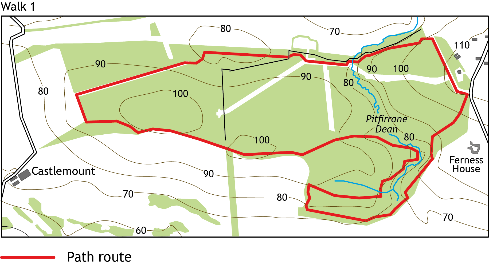
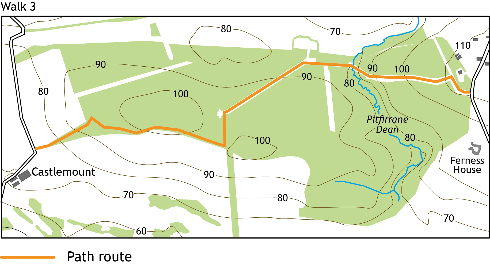

Dean Wood
Dean wood is owned and maintained by the Forestry Commission. It has one forestry road running through the middle of the wood. The road makes for an easy walk but the better walks are to found skirting the outer edge of the wood. Areas of the woodland were harvested in 2018 creating open sunny spaces. A small burn runs through the middle of the wood from North to South. This has created a pleasant valley walk.
Begin each walk at the forestry gate on Lundin Road, where there is room for four cars to park.
Walk 1
Walk 2
Walk 3
Walk 1: 3 miles
This walk includes a bit of everything: steep hills, woodland, open ground and even a bit of grass land. Proper walking boots are recommended as it's easy to turn your ankle on one of the many tree roots that are found on the paths.

Walk 2: 1.75 miles
A walk of two halves. The forestry road is an easy stroll with open views of the surrounding area and its wildlife. The other half of the walk takes you through woodland down into the valley and across the burn. The burn is very shallow but will still require waterproof shoes.

Walk 3: 2.5 miles
Dean wood drops around 50m from East to West meaning this is a good walk for those looking for exercise. The route is a simple there and back down the forestry road and establish paths. For an alternative walk, parking for one car is available at the Western edge from where the route may be tackled in the other direction.
